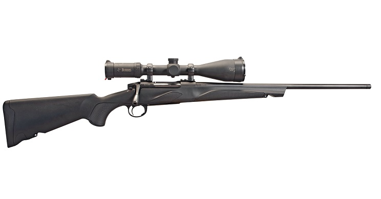
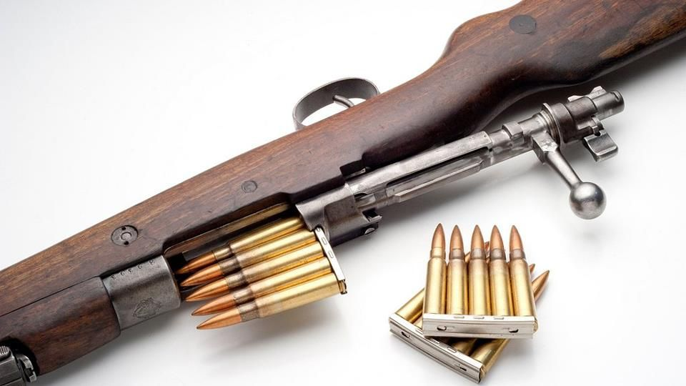
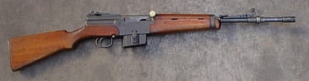

Es el arma de hombro, de cañón estriado que posee una recámara formando parte alineada permanentemente con el ánima del cañón. Los fusiles pueden ser de carga tiro a tiro, de repetición, semiautomáticos y automáticos (pueden presentar estas dos últimas características combinadas, para uso opcional mediante un dispositivo selector de fuego). Creada con propósitos ofensivos, es el arma personal más utilizada en los ejércitos desde el final del siglo XVII. Se acostumbraba fijarle una bayoneta para la lucha cuerpo a cuerpo, pero ya es obsoleta. El nombre de "fusil" se origina en la evolución del mosquete al empleo del pedernal, abandonando la mecha. A medida que se disminuye la longitud de los fusiles varían en su denominación, estando en segundo lugar la carabina
En Europa aparece hacia la mitad del siglo XIX el primer fusil de cerrojo, llamado de esta forma por el mecanismo de extracción de la vaina usada y recarga para un nuevo disparo, un cilindro metálico con un saliente lateral parecido al cerrojo de las antiguas cerraduras, que permitía abrir el arma por la parte posterior del cañón para colocar el cartucho, armando al mismo tiempo el conjunto de muelle y percutor que golpearían la parte posterior del cartucho, y cerrarla después para efectuar el disparo. Las armas de cartucho se cargan así por la parte posterior del cañón. De esta forma se puede cargar el arma en cualquier posición, lo que permite al soldado ponerse a cubierto durante el proceso.
En la década de 1830 (Fusil Dreyse) aparecen los primeros fusiles de cerrojo con un cargador interno en forma de caja metálica, con un resorte de muelle en la parte inferior y que se cargan colocando los cartuchos en una cinta metálica, formando lo que se llama un peine, abriendo el cierre del arma y colocando y empujando el contenido del peine en el interior del cargador. Los fusiles de cerrojo con cargador fijo más famosos son posiblemente los alemanes Mauser 98, de calibre 7,92 mm, 7,65 mm, etc. El fusil de cerrojo con cargador fue el arma personal más utilizada por la infantería en la primera mitad del siglo XX hasta el final de la Segunda Guerra Mundial. Posteriormente el fusil de asalto le sustituyó en el uso común, pero todavía se sigue utilizando en mucha menor cantidad. Por sus características, se usa en actividades que requieran gran precisión a larga distancia con el mínimo número de balas como, por ejemplo, la cacería y el tiro de precisión.
Arma que dispara un solo cartucho cada vez que se aprieta el disparador. Las armas semiautomáticas utilizan la energía de los gases del disparo, el empuje frontal, el empuje posterior o el retroceso para eyectar la vaina servida después que la bala ha recorrido el cañón, introducir en la recámara un nuevo cartucho desde su cargador y preparar el mecanismo de disparo, permitiendo disparar de nuevo una vez que se presiona el disparador.
De funcionamiento similar al del semiautomático, la característica principal de éste es el hecho de poder realizar disparos consecutivos siempre y cuando se mantenga presionado el disparador o hasta el momento en que agote su munición.
 calibre .30-06 Springfield (7.62x63mm)")